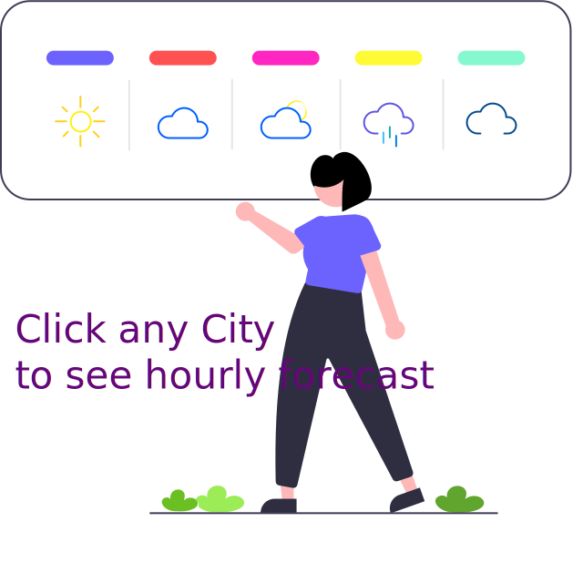

<div class="rows d-flex justify-content-around" style="position: relative">
  <div
    [ngClass]="
      (menuCollapse$ | async)
        ? 'carousel-container'
        : 'carousel-container__collapsed'
    "
  >
    <igx-carousel
      #carousel
      [navigation]="false"
      [pause]="false"
      animationType="fade"
      [interval]="4000"
      [gesturesSupport]="false"
      [maximumIndicatorsCount]="10"
      animationType="slide"
    >
      <igx-slide *ngFor="let city of cityData">
        <div class="image-container">
          <app-card
            *ngIf="city?.weather | async as cityWeather"
            [weatherData]="cityWeather"
            [imgUrl]="city?.imageUrl || '../../../assets/images/earth.jpg'"
            (detailClicked)="getCityDetail($event)"
          ></app-card>
        </div>
      </igx-slide>
    </igx-carousel>
  </div>

  <div
    *ngIf="
      hourlyForecastData$ | async as hourlyForecastData;
      else skeletonWeather
    "
    [ngClass]="
      (menuCollapse$ | async)
        ? 'slider-container'
        : 'slider-container__collapsed'
    "
  >
    <app-daily-card
      [forecastData]="hourlyForecastData"
      [imageUrl]="selectedCityImageUrl"
    ></app-daily-card>
  </div>

  <ng-template #skeletonWeather>
    
  </ng-template>
</div>
